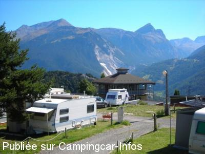
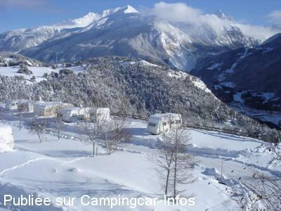
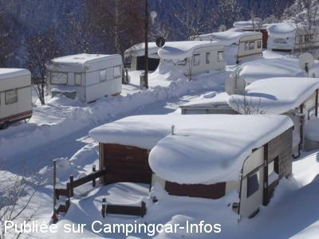

ACS = Aire de services sur camping acceptant le passage pour les services de :
AUSSOIS
(N° 205)
Accès/adresse :
Route de Cottériat
Camping-Caravaneige municipal La Buidonnière***
73500 AUSSOIS
Camping-Caravaneige municipal La Buidonnière***
73500 AUSSOIS
Latitude : (Nord) 45.22423° Décimaux ou 45° 13′ 27′′
Longitude : (Est) 6.74576° Décimaux ou 6° 44′ 44′′
Tarif : 2016
Personne + 10 ans : 7,10 €
Enfant - 10 ans : 3,80 €
Électricité : 6,30 à 8,30 €
Animal : 1,30 €
Lave-linge : 6 €
Sèche-linge : 5 €
Services C-C de passage 1 service : 2 €
Type de borne : Autre
Services :


Accès handicapés
Local à skis
Autres informations :
Ouvert toute l'année
160 emplacements
Tél : +33(0)479 203 558
camping@aussois.com
http://www.camping-aussois.com

Le 12/01/2008 par PhilR

Le 12/01/2008 par PhilR

Le 12/01/2008 par PhilR
de
CALANDRE
le 18/07/2013 :
Bonjour à toutes et à tous
il est souhaitable que la municipalité réfléchisse à un forfait camping car hors saison de ski plus abordable côté tarifs.
merci
Bonjour à toutes et à tous
il est souhaitable que la municipalité réfléchisse à un forfait camping car hors saison de ski plus abordable côté tarifs.
merci
de
PhilR
le 20/12/2009 :
Vu sur www.aussois.com
Le camping-caravaneige municipal de "La Buidonnière" est un des rares campings de montagne classés ***. Il compte 160 emplacements desservis par un bâtiment sanitaire parfaitement équipé et agencé. Tous les emplacements sont délimités et raccordés au réseau électrique.
* douches chaudes, équipements "spécial handicapés"
* salle de séchage et de repassage, lave-linge et sèche-linge
* salle de repos et de lecture
* local à skis
* cabine téléphonique
* dépôt de glace à rafraîchir
* animaux admis
L'hiver, une navette gratuite assure la liaison avec le village et les remontées mécaniques.
Nouveau !
* Une borne payante (eau + électricité) pour les camping-cars ne désirant pas séjourner au camping vient d'être installée à l'entrée du camping.
Tarif : 2 € chaque service
* Un service de vidange pour les WC chimiques vient d'être installé dans le bâtiment sanitaire.
Ouverture :
Toute l'année
Horaires d'ouverture du bureau cet été : 9h-11h ; 15h-18h tous les jours.
Pour info.
Bonne Fêtes de fin d'année et vive le CC ! ;-)
Vu sur www.aussois.com
Le camping-caravaneige municipal de "La Buidonnière" est un des rares campings de montagne classés ***. Il compte 160 emplacements desservis par un bâtiment sanitaire parfaitement équipé et agencé. Tous les emplacements sont délimités et raccordés au réseau électrique.
* douches chaudes, équipements "spécial handicapés"
* salle de séchage et de repassage, lave-linge et sèche-linge
* salle de repos et de lecture
* local à skis
* cabine téléphonique
* dépôt de glace à rafraîchir
* animaux admis
L'hiver, une navette gratuite assure la liaison avec le village et les remontées mécaniques.
Nouveau !
* Une borne payante (eau + électricité) pour les camping-cars ne désirant pas séjourner au camping vient d'être installée à l'entrée du camping.
Tarif : 2 € chaque service
* Un service de vidange pour les WC chimiques vient d'être installé dans le bâtiment sanitaire.
Ouverture :
Toute l'année
Horaires d'ouverture du bureau cet été : 9h-11h ; 15h-18h tous les jours.
Pour info.
Bonne Fêtes de fin d'année et vive le CC ! ;-)
de
PhilR
le 12/01/2008 :
Petite station très agréable, tout comme le camping, mais il faut vidanger les E.G. soit au seau, soit au 'roller tank': pas d'aire de services pour le moment. Vidanges WC et plein E.P. aux sanitaires, après avoir demandé...
Ado. (15>18 ans), j'y allais avec mes parents et des amis; à 40 ans passés ! j'y emmène ma 'petite' famille de temps en temps...
Petite station très agréable, tout comme le camping, mais il faut vidanger les E.G. soit au seau, soit au 'roller tank': pas d'aire de services pour le moment. Vidanges WC et plein E.P. aux sanitaires, après avoir demandé...
Ado. (15>18 ans), j'y allais avec mes parents et des amis; à 40 ans passés ! j'y emmène ma 'petite' famille de temps en temps...